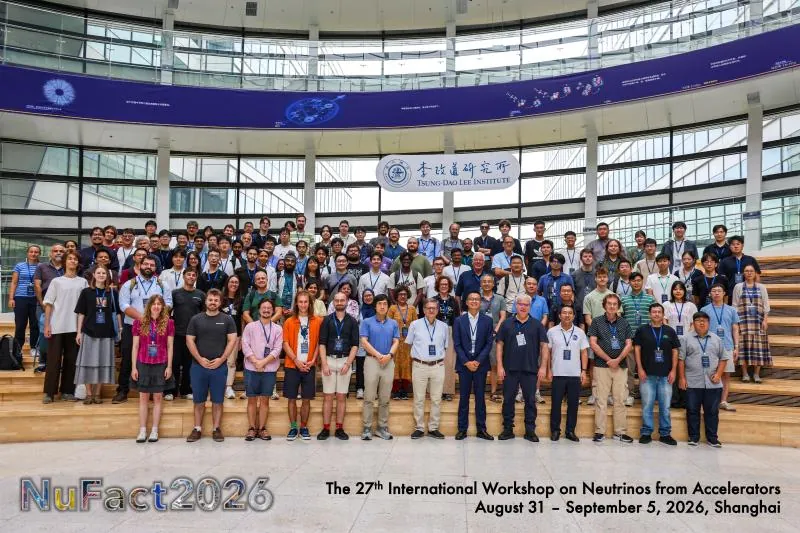
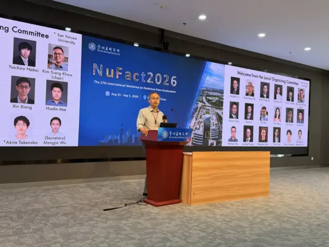
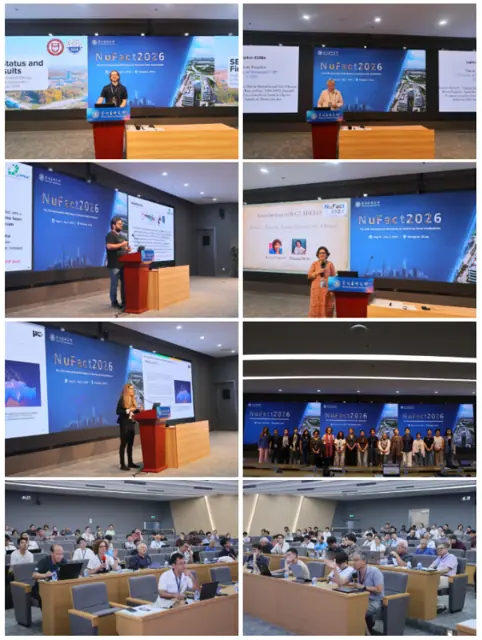
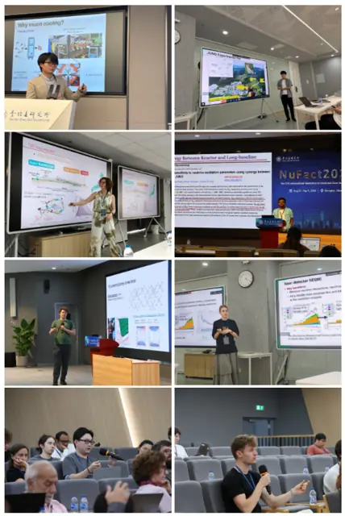
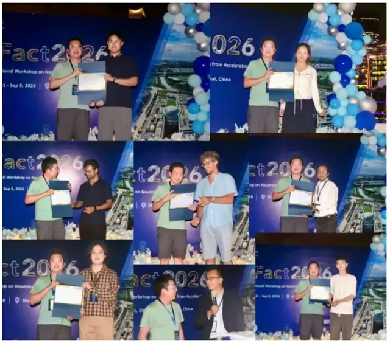
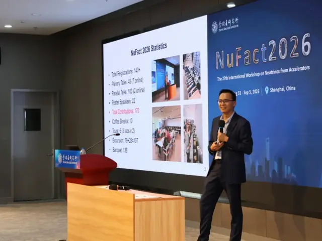

From 31 August to 5 September 2026, our group hosted NuFact 2026, the 27th International Workshop on Neutrinos from Accelerators, at the Tsung-Dao Lee Institute (TDLI). It was the first time the series has been held in Shanghai. Kim Siang Khaw served as Conference Chair and Chair of the Local Organizing Committee, and co-convened Working Group 4 on Muon Physics.


More than 140 scientists from over ten countries and regions — including the USA, Japan, Switzerland, Turkey, Italy, India, Malaysia and China — took part, from institutions such as Boston University, the University of Oxford, the University of Chicago, PSI, ETH Zurich, Peking University, Tsinghua University, IHEP and SARI of the Chinese Academy of Sciences. Prof. Jianglai Liu, Vice Director of TDLI, hosted the opening ceremony and welcomed participants on behalf of the organizers.
Founded in 1999 as the International Workshop on Neutrino Factories, NuFact now covers all current and future accelerator- and reactor-based neutrino programmes as well as muon physics. This year's programme comprised 45 plenary talks, 103 parallel talks and 22 posters across seven working groups: neutrino oscillations, neutrino scattering, accelerator physics, muon physics, neutrinos beyond the PMNS framework, detectors, and inclusion, diversity, equity, education and outreach. Highlights included JUNO's first neutrino-oscillation results with high-precision measurements of key oscillation parameters, and the latest oscillation analyses from T2K and NOvA, including new results from their upgraded near detectors. Discussions also covered next-generation neutrino factories and beams, muon colliders, precision measurements and new detector technologies.
During the week, participants toured the TDLI laboratories and the RDTM Best Poster Award was presented. Selected papers will appear in a NuFact 2026 special issue of Radiation Detection Technology and Methods (RDTM). Kim Siang Khaw gave the closing summary, and the next NuFact will be held in Rio de Janeiro, Brazil, in 2027.










We thank all speakers and participants, the international and local committees, our sponsors, and the TDLI staff and student volunteers who made the week possible.
Event page: NuFact 2026 · Reports (in Chinese): SJTU News, WeChat article
2026年8月31日至9月5日，课题组在李政道研究所承办了第27届加速器中微子国际研讨会（NuFact 2026）。这是该系列会议首次在上海举办。许金祥担任大会主席及本地组委会主席，并共同召集第四工作组（缪子物理）。
来自美国、日本、瑞士、土耳其、意大利、印度、马来西亚和中国等十余个国家和地区的140余位科学家参加了本次会议，所在机构包括波士顿大学、牛津大学、芝加哥大学、瑞士保罗谢勒研究所（PSI）、苏黎世联邦理工学院、北京大学、清华大学、中国科学院高能物理研究所和中国科学院上海高等研究院等。李政道研究所副所长刘江来教授主持开幕式，并代表主办方致欢迎辞。
NuFact 创办于1999年，最初名为“中微子工厂国际研讨会”，如今已涵盖当前及未来所有基于加速器和反应堆的中微子研究计划以及缪子物理。本届会议共安排45个大会报告、103个分会报告和22张墙报，分设七个工作组：中微子振荡、中微子散射、加速器物理、缪子物理、超越 PMNS 框架的中微子物理、探测器，以及包容性、多样性、公平、教育与科普。会议亮点包括：江门中微子实验（JUNO）发布首批中微子振荡结果，对关键振荡参数进行了高精度测量；T2K 和 NOvA 实验报告了最新振荡分析，包括其升级后近端探测器的新结果。与会者还围绕下一代中微子工厂与中微子束流、缪子对撞机、精密测量以及新型探测器技术等议题展开了深入讨论。
会议期间，与会者参观了李政道研究所实验室，并举行了 RDTM 最佳墙报奖颁奖。部分论文将刊登于Radiation Detection Technology and Methods（RDTM）NuFact 2026 专刊。许金祥作大会总结报告。下一届 NuFact 将于2027年在巴西里约热内卢举行。
衷心感谢全体报告人和参会者、国际及本地组委会、各赞助单位，以及李政道研究所工作人员和学生志愿者，是大家的共同努力成就了本次会议。
会议主页：NuFact 2026 · 相关报道：上海交通大学新闻网、微信公众号文章